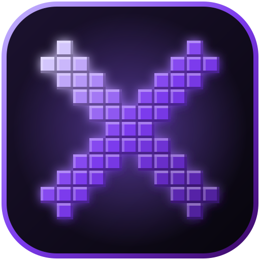

Lance Minecraft en 1.8.9, 1.19.4, 1.21.4 ou 1.21.8 avec Forge, OptiFine ou Fabric. Les mods utiles sont déjà installés, il ne reste qu'à jouer.
Tu te connectes avec ton compte Minecraft officiel. Ton skin apparaît dans le launcher et tu peux jouer sur les serveurs.
Choisis la version dans le menu déroulant puis le chargeur de mods. Chaque profil garde ses propres mods et réglages.
Le bon Java est téléchargé la première fois. Pas besoin de l'installer toi-même.
Interface noire et violette, fond d'écran personnalisable, RAM réglable en un curseur.
Xaero's Minimap dans tous les profils, pour marquer ta base et retrouver ton chemin.
InventoryHUD+ affiche ton inventaire et ton armure sans ouvrir de menu.
Zoom, freelook, toggle sprint, fullbright, compteur FPS et CPS, Auto GG selon la version.
Autoclic et HUD personnalisable, proposé mais désactivé par défaut. Beaucoup de serveurs interdisent les autoclickers : à toi de vérifier.
Le launcher t'envoie sur optifine.net pour le télécharger, puis le place au bon endroit en un clic.
Ajoute n'importe quel .jar depuis l'onglet Mods, active ou désactive-le quand tu veux.
Prends la version LTS sur nodejs.org. À faire une seule fois.
Clic droit sur xNyms-Client.zip puis « Extraire tout ». Range le dossier où tu veux, par exemple dans Documents.
Double-clic sur DEMARRER.bat. La première fois, il installe ses composants pendant une minute. Si Windows affiche « Windows a protégé votre ordinateur », clique sur « Informations complémentaires » puis « Exécuter quand même ».
Clique sur « Se connecter avec Microsoft », choisis ta version et ton chargeur, puis JOUER.